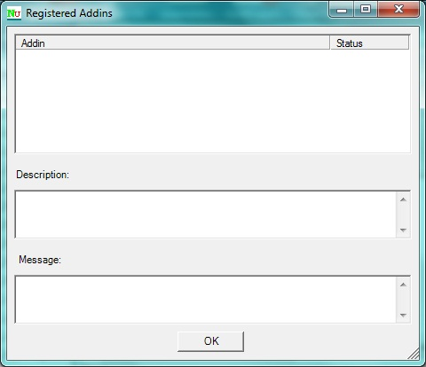

Addins Dialog
The Addins Dialog is displayed using the Tools | Addins menu item on the main menu. It lists all addins that have been found and loaded by NUnit.

The Addins Dialog is displayed using the Tools | Addins menu item on the main menu. It lists all addins that have been found and loaded by NUnit.